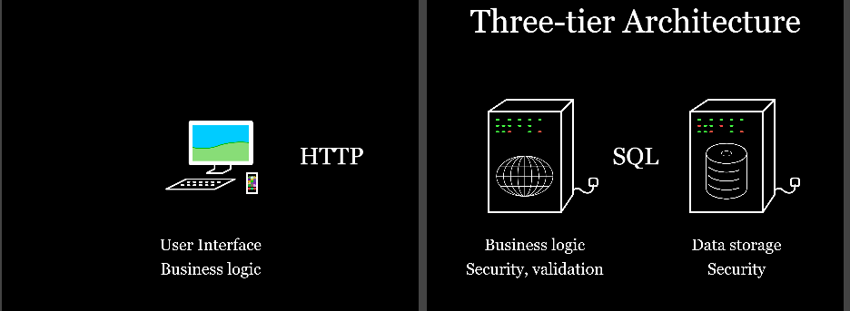

Discovery Log
Contents
First coursework - Literature Review
- Introduction Worksheet
- Web Security Worksheet
- Reviewing Literature Worksheet
- Academic Writing Worksheet
Second coursework - Website
Literture Review
During the first semester, I have focused a lot on the topic “Web security” to build more understanding around the topic as well as to explore different themes.
Introduction Worksheet
The first practical worksheet was setting my virtual machine (VM) up in the lab and checked if the status is running. Also, I read the document about VM and understood how to run web server or access the database using the VM. In addition, I spent a week to test out different text editors. During the testing process, I found out there are many different editors beside notepad ++ like atom and sublime. After I played around each text editor, I think atom works the best for me. It has a very high level of customisation on the user interface as well as many different packages that I can install which will help me later in the development of my website. The package manager is very useful to manage all my packages and ensure all their versions are up to date.
Web Security Worksheet
The second practical worksheet was working with a group to identify different kinds of information that you generate on a day to day basis as well as categorise that information to one of these categories “secret”/” sensitive”/” public”.
| Public | Secret | Sensitive/Private |
|---|---|---|
| Entering/exiting the public building ie library | Online Banking - Information on account details, money trans-fers (transfer ref) | Card reader machines at shops - Purchasing goods, updating stocks |
| Media streaming - Spotify, YouTube | Business plans within a compa-ny | Logging on a computer - To access files/ systems |
| Facebook - Liking and shar-ing posts | ganisation (Restaurants & Fast Food chains) ingredients infor-mation private - e.g Coca Cola | Facebook - Messaging |
| Registering with card - At-tendance | Military personnel and docu-ments - Nuclear access codes, weapon plans, military plans | Texting/calling - Generated messages, recorded calls |
| Bus system - Generates amount of passengers. | Top secret information to na-tional security - Clearance | Google - Browsing history, collect cookies, save password/ username, maps |
| Coffee machine - Uses data to generate amount of sugar and type of beverage. | Research data - medical | Emails - Messages, attach-ments, files |
| SmartTV - Broadcasts infor-mation from several channels | Dark web - Hidden illegal do-mains | Post - Letters |
| Vending Machine - Uses numbers to output a product | TCP - Encrypted Sites | Scientific Reports |
| Printers - Gathers infor-mation from computers to print information onto paper. | Government resources - fund-ing and financial data | |
| Wikipedia - Database of all information | Online Banking - Information on account details, money transfers (transfer ref) | |
| Cash register/ATM - Retrieves money and checks balance | ||
| Business plans within a com-pany | ||
| Account passwords |
Reviewing Literature Worksheet
The third practical worksheet was starting the literature coursework and the review must cover the topic “risks mitigation in personal online security”.
At the beginning of the practical session, I did a little bit of reading around the subject to identify some common ideas and themes so I could use them as a source of search terms. Also, I made notes on what I read and then converted the notes into a big mind map which helped me to organise my thoughts on emerging themes.
After I got at least three sets of search terms, I started planning my research to find literature on the online university library. I entered the search terms on advanced search option to narrow down my search to reasonable degree as well as the literature that I really needed for my review.
Academic Writing Worksheet
The fourth practical worksheet was improving my writing before I start my literature review. The first task was replacing phrasal verbs with better meaning words. The second task was replacing phrasal verbs with a more formal single word of my choosing. The third task was choosing more appropriate adjectives or expression. The fourth task was choosing more formal alternative to replace the bold text. The fifth task was replacing the contractions with full words. The sixth task was improving the writing by removing either the author or the reader. The seventh exercise was practicing how to write with more cautions. The eighth task was combining all the things above to rewrite given sentence. After I finished this worksheet, I have improved both my writing skill and my vocabulary. The academic writing style document on Moodle helped me to understand what to writing and what to not writing in my literature review “FOSCI”. F for formal, O for others, C for cations, S for succinct and I for impersonal.
Task 3 - Choose the more appropriate expression from those in bold.
- Researchers have made considerable/great progress in understanding the problem. - Considerable
- We got/obtained preliminary results from the black box. - Obtained
- The results from some/numerous experiments will be summarised. - Numerous
- Loss of privacy a consequence/thing that can happen when posting photos online. - Consequence
- In academic writing, appropriate sources are really important/paramount. - Paramount
- Some ideas bubbling out of our thought percolator/arising from our research are are covered in that paper. - Arising from out research
Website
After the first semester, I have been focused a lot on HTML to expand my knowledge on HTML.
HTML Worksheet
The fifth practical worksheet was starting to work with my virtual machine and how to start uploading web pages to my virtual machine. Also, I started my web server by connecting my virtual machine using SHH (secure shell).
Style Worksheet
The sixth practical worksheet was starting to work on CSS by building a simple HTML5 page and adding CSS style rules to it. In this practical, I have learnt two different ways to use a stylesheet with an html file. One is embedded the stylesheet in the html file and the other one is link a CSS stylesheet to the html file. In addition, I have learnt two different selectors to restyle the html page. One of them is Class and the other one is ID. Both selectors allow me to link a specific style to a certain section of the html. Furthermore, I experimented many different designs on CSS Zen Garden and I have learnt how to use different html properties to style the website to the way I wanted.
Addressing Worksheet
The seventh practical worksheet was starting to work on links. The first task was find four websites that I like and add them into the given index.html page. The four websites were Google chrome, YouTube, Facebook and Twitter. The second task was about relative links so I was linking different html pages together and the tag I used to link the pages was a tag follow by href. The third task was adding target attribute for each of the links to make them open in a new window.
Using images Worksheet
The eighth practical worksheet was about images. The task was downloading a file with different examples and work through each of them. In this practical, I have learnt how to manipulate image’s properties such as the image enlarge when hover as well as understand how each property affects the look of the image. The one I found interesting is the responsive image and it helped me to understand how you can change an image based on the width size of the screen.
Productivity and Efficiency:Editors Worksheet
The ninth practical worksheet was about text editors. The task was experimenting more with the text editor Atom. In this practical, I used Atom for normal editing and I tested out the hotkeys such as the opening the command palette ctrl-shift-P. Also, I went to settings and settings/themes to experiment different themes and front size that is comfortably readable for me. In addition, I tried to create my own snippet for something that I have needed to type too often.
Usability worksheet
The tenth practical worksheet was about usability. The task was starting to plan my site architecture for example how many pages I’ll need or what the content of those pages. In this practical, I exchanged ideas with the person sat to next me which helped me to decide a lot of things like the colour for my background and the layout of my website.
Accessibility Worksheet
The eleventh practical worksheet was about accessibility. The first was simulating impairment to find out what is necessary adjustment for their computer so they can use it. For this task, I was using the given website BBC Accessibility to find out what kind of adjuectment needed for different types of disability. The next task was evaluating rich’s website using POUR. The final task was evaluating my site using the provided form. In this practical, I have learnt the importance of accessibility like some colours don’t work well for colour blind people.
SVG(Scalable Vector Graphics) Worksheet
The twelfth practical worksheet was about SVG – Scalable Vector Graphics. The first task was downloading the lecture example and experimenting with the examples. The second task was trying to find a SVG drawing tool that is better for me. The third task was looking at the SVG spec. The fourth task was drawing a few basic shapes and save them later for the web content. In this practical, I have learnt how to use SVG code to draw basic shapes like rectangle. I think this is useful because I can apply SVG code to create more complex objects like logo.
These SVG objects are created by using SVG source code and I created these during the practical session
This is a drawing of me that my friend drew using illustrator. SVG is a good replacement for png or jpeg because SVG is vector grpahic base, it can scale any size to fit web pages.
Secondly, SVG is defined by XML format. Unlike bitmap image formats such as JPG or PNG, it does not consists of fixed set of dots, but shapes and their attributes, so it can be saved as the smallest size possible.
There are other benefits like text labels, descriptions that can be searched by seatch engines, and also scripting control for custom interactive events and animations.
Database in HTML
How do we connect databse in our computers to website running on client computers?
First, add a computer in between that can translate SQL to HTTP. Then, it talks SQL to the DB and HTTP to the clients. This is called 3-tier architecture.

Separation of concerns is the process of breaking a computer program down into distinct features that overlaps in functionality as little as possible. A convern is any piece of interest of focus in a program. Progress towards SoC is traditionally achieved through modularity and encapsulation, with the help of information hiding.
In modern website, there is an API (Application Programming Interface) between the client and the app server.